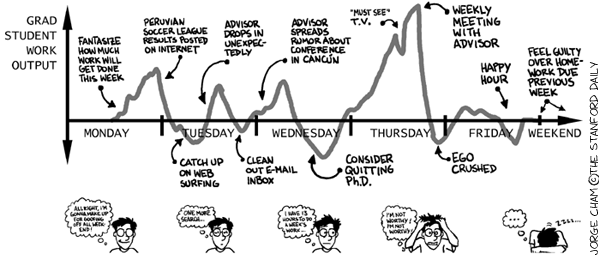

Research
Research Interests
- Applications of Statistics for the Social Sciences
- Machine Learning and Data Mining
- Spatial statistics
- Missing Data
- Statistical Visualization

Current Research
Most people know that the purchasing power of a dollar is not necessarily the same in Mexico or Britain as it is in the United States. The same unit of currency can buy significantly more or less depending on what country it is spent in. The same phenomenon holds, albeit perhaps more subtly, between different regions of the United States. A visitor to Manhattan from Michigan, for example, might face a significant sticker shock if they expect prices to be the same as they were accustomed to back home. However, while social scientists and journalists have internalized the need to adjust nominal dollar values into real terms before making comparisons between different countries or time periods, comparisons within the United States are often still made on the basis of nominal dollar values. This has the potential to distort the outcomes of any study which has to contend with significant regional price variation.
To facilitate more accurate comparisons in these cases, the Bureau of Economic Analysis (BEA) recently began to publish two sets of annual indices for regional price levels (known as “regional price parities,” or RPPs) within the United States. The first is an estimate of price levels within US states, and the second is an estimate of price levels within major metropolitan areas. However, there are some circumstances in which information at these levels of aggregation may still prove too coarse. The goal of my current project is to develop a method for producing publishable estimates of these RPPs at the county level.